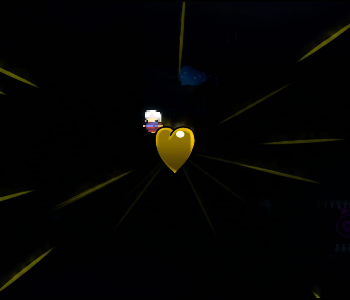

Capítulo 2: Terreno Antigo - lado C
Terreno Antigo é o segundo capítulo de Celeste. O lado C apresenta um aumento significativo na dificuldade. Para desbloquear o capítulo, é necessário completar o lado B do respectivo capítulo.
Coletáveis
Coração de cristal:
O coração de cristal do capítulo 2 - lado C é adquirido ao concluir o capítulo.
Morangos:
• Morango dourado:
Conseguido após concluir a fase enquanto segura o morango dourado. Só pode ser coseguido após concluir o lado B do capítulo 8.